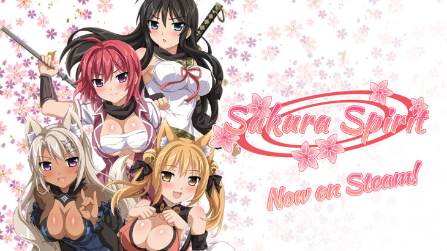

Sakura Spirit is a 2014 visual novel developed by Winged Cloud and published by Sekai Project. The game was released on July 9, 2014 on Steam and MangaGamer. It is one of the few visual novels that are developed outside Japan and aimed at the English-speaking market. It is also one of the first projects published by Sekai Project that is not a translation of a Japanese visual novel, but rather an original English work. The game is a visual novel where the player reads text on the screen combined with anime-styled artwork. However, unlike some other visual novels, Sakura Spirit does not allow the player to make selections (except for one at the end), which normally allows the visual novel's plot to progress in the direction of the player's choice.